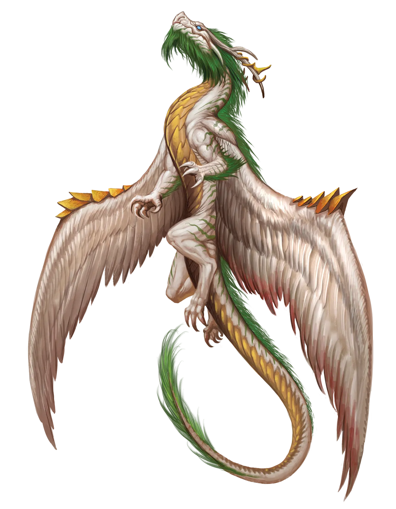
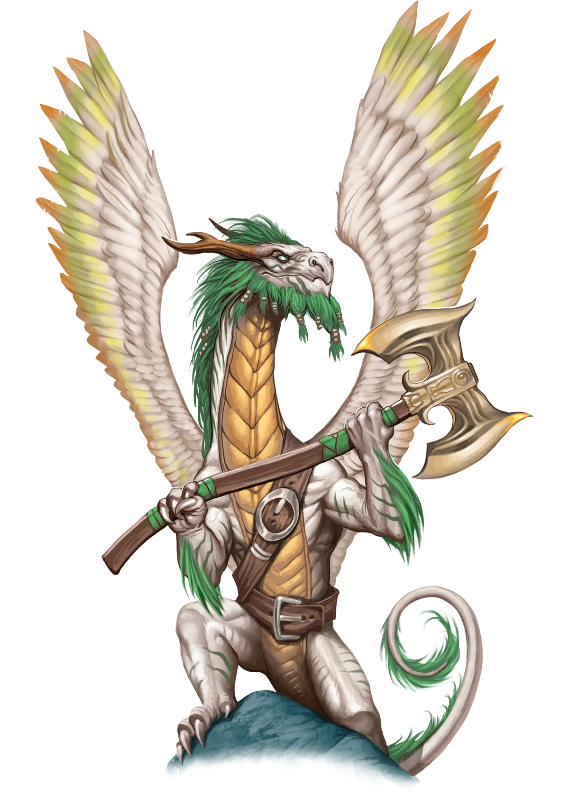

无知是福
一些至福龙愚蠢到通过其盲目的仁慈来播下自身不幸的种子，在拯救一个被龙牺牲压力所击垮并最终成为其宿敌的凡人时削弱了自己。至福龙可以采取的一种防止这一未来的技术是确保凡人对其获救的真实细节一无所知。如果他们保持昏迷，凡人可能永远不会真正意识到他们的状态为何消失了。这让他们能够填上自己的解释。虽然这有助于缓解压力，但如果凡人感到自己不可战胜，这可能导致更糟糕的问题。
极乐龙 Bliss Dragon |
|
|
至福龙散发的温暖与宁静，将治愈圣所营造于未受玷染的荒野深处，庇护野生动物和无辜者，同时驱逐邪恶生灵。它们对自己的命运深为满足，并被涅��的觉悟所超脱，极少为自己施展极光永恒仪式。然而，时不时地，一位英雄或其他具有伟大未来潜力的存在会闯入至福龙的圣所，急需超越至福龙自身能力的治疗。在这种情况下，当天平上悬垂的生命比至福龙在圣所中的角色更重时，极光永恒仪式便提供了答案。至福龙通过此仪式挽救凡人的生命，改变了自己的本质，并在凡人的余生中将两者紧密相连。虽然其他拯救凡人生命或治愈其疾病的永恒之龙往往各奔东西，但永恒至福龙几乎总是选择继续与它们所拯救的凡人同行。传统派的至福龙足够明智，能够认识到永恒之龙的决定在当时是两个糟糕选择中更好的一个。它们不会将永恒至福龙视为责任或污名化它们；相反，它们寻求给予爱与支持的理解，但仅在永恒至福龙所需的程度上。至于永恒至福龙，它们珍视亲族的理解，尤其是当它们知道许多其他永恒位面之龙发现传统派亲族不予支持或公然敌对时。 永恒至福龙极有可能与它们在决定施展极光永恒仪式的那个命运之日所拯救的凡人一同冒险。虽然这种陪伴常常导致深厚的友谊甚至亲情或浪漫之爱，但这关系也可能充满坎坷、刺棘或深重的灾难。这些悲剧案例通常源于龙或凡人开始怨恨对方。永恒至福龙已经切断了自身与涅��纯净宁静和觉悟的联系，因此，正如来自邪恶位面的位面之龙能够发展出自己的道德感一样，至福龙也可能迷失其最初的原则。如果至福龙拯救的凡人――那个在当日看似充满未来潜力的人――开始表现得粗鲁、忘恩负义或以似乎浪费生命及龙的牺牲的方式行事，永恒至福龙便会日益怨恨。与此同时，如果凡人开始感到被龙的无所不在所压迫，尤其是考虑到赋予凡人的巨大压力，以及龙为让凡人活下去所做的牺牲的无言提醒，凡人可能会开始怨恨龙。当这种情况发生在一个人身上时，往往会蔓延到另一方。即便如此，仍有希望两人能将事情谈清楚、解决问题并挽救他们的关系。然而，如果情况任由恶化，可能导致毁灭性的悲剧，一方、另一方或双方偏离道路，潜在地陷入深重的邪恶。永恒至福龙倾向于偏好有助于治疗或尊重自然的职业。虽然德鲁伊是其中的主要选择，牧师、圣武士、游侠和某些类型的术士也紧随其后。 无知是福 一些至福龙愚蠢到通过其盲目的仁慈来播下自身不幸的种子，在拯救一个被龙牺牲压力所击垮并最终成为其宿敌的凡人时削弱了自己。至福龙可以采取的一种防止这一未来的技术是确保凡人对其获救的真实细节一无所知。如果他们保持昏迷，凡人可能永远不会真正意识到他们的状态为何消失了。这让他们能够填上自己的解释。虽然这有助于缓解压力，但如果凡人感到自己不可战胜，这可能导致更糟糕的问题。 极乐龙特质 Bliss Dragon Traits 你出身于一脉性情平和的治愈者――极乐龙世系。 |
  |